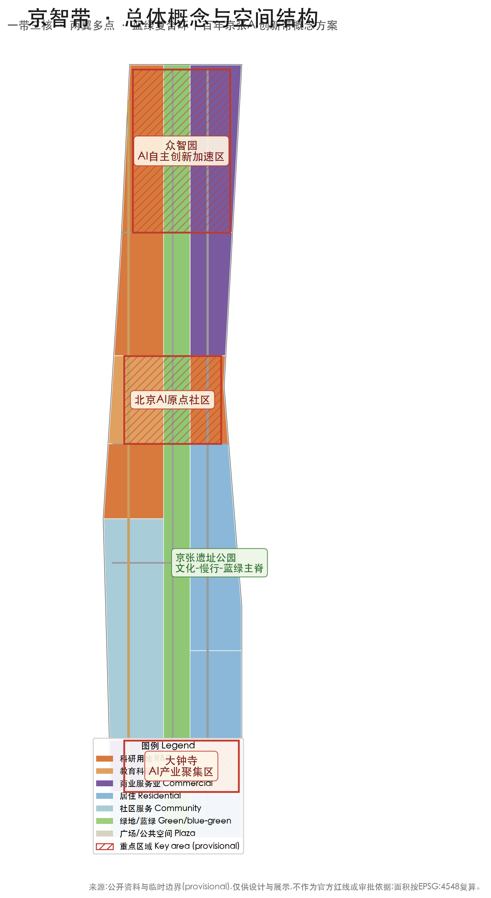
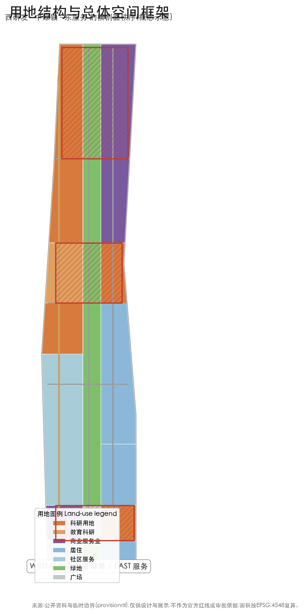
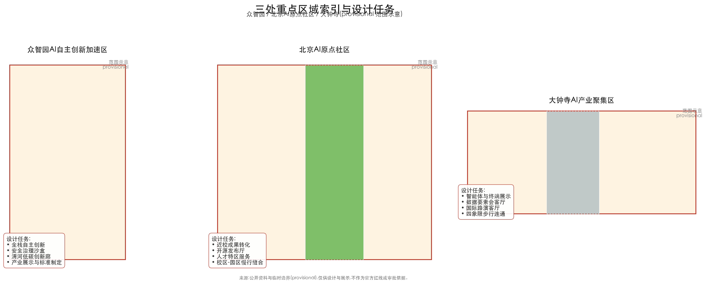
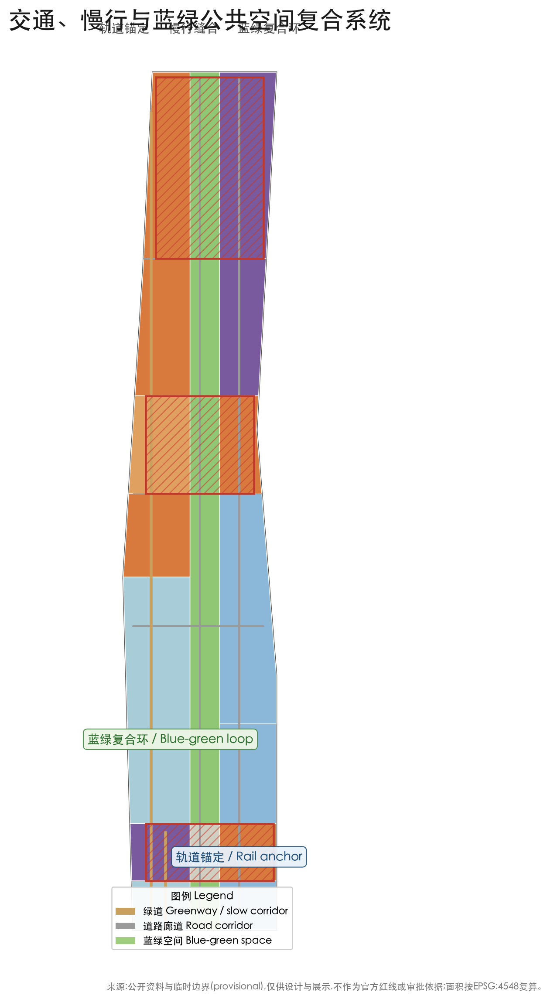
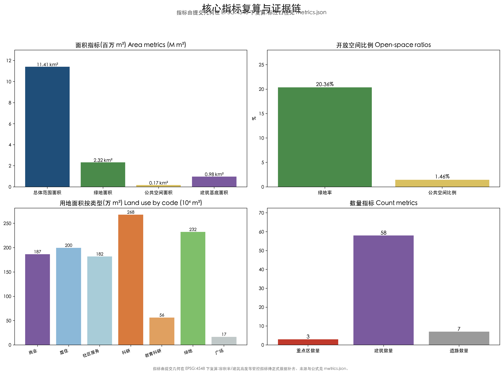

京智带——百年京张AI创新带总体城市设计概念方案
以‘京智带’（Belt of Intelligence）为总体概念，构建‘一带三核、两翼多点、蓝绿复合环’空间框架；基于 provisional boundary 与结构化自检要求生成的 formal AI 城市设计方案包，保留精度警示与复算要求。
京智带——百年京张AI创新带总体城市设计概念方案
设计依据与资料清单
本 formal 方案以北京市规划和自然资源委员会海淀分局发布的《百年京张AI创新带城市设计国际方案征集资格预审公告》为第一依据，并以 brief/site-package/ 中经维护者登记的临时粗略边界、重点区域、枚举、指标和来源清单为机器可读依据。AI agent 在生成方案前必须读取 design_brief.json、allowed_design_space.json、sources.json、enums/、ranges/、schemas/、data/source_registry.json 和 data/processed/agent_fact_pack.md，并用 project_scope_summary.csv、agent_task_requirements.csv、source_use_matrix.csv、missing_data_checklist.csv 建立任务、范围、资料用途和缺口清单。所有设计判断都要拆分为可追溯来源、可复算指标、可校验图层和可人工复核假设。公告要求方案达到控制性详细规划的城市设计深度和规划综合实施方案的城市设计深度，因此文本叙述不能替代 GeoJSON、指标表、A3 文册、A0 展板和 HTML 电子展示成果 来源 来源。
方案不是独立愿景文本，而是从公告、面向智能体任务书和场地资料出发组织成果；本节只把最关键依据放在判断旁边 来源 来源 深度。完整来源和标准覆盖分别保存在 sources.json、standard_matrix.json 与 design_depth_matrix.json，不在正文重复机器索引。
资料登记表的使用边界如下 来源：
- data/source_registry.json 登记公开、清权与临时资料的用途边界。
- 当前登记摘要：formal 可用资料 7 条，背景资料 1 条，provisional-only 资料 1 条。
- agent 不得把 background_only 或 provisional_only 资料升级为 official boundary、法定控规、正式评分依据或政府实施承诺。
data/processed/agent_fact_pack.md 是本方案的阅读导航层，不是新的权威来源 来源。它帮助 agent 把三层范围、三处重点区、公告任务、agent.1-agent.6、资料可用性和缺资料事项组织成可读方案；事实判断仍需回到已登记的原始材料 来源 来源，完整来源关系由 sources.json 保存。

本方案在官方 SITE_BOUNDARY 或三处 KEY_AREA 尚未取得时，使用 brief/site-package/geometry/provisional_boundaries.geojson 生成临时 formal 包。提交包中的 geometry/site_boundary.geojson 与 geometry/key_areas.geojson 均标注为 provisional_constraint、official_boundary=false，只能用于方案生成、自检、可视化和设计讨论，不能作为 official redline、审批依据、精确面积依据或法定控制结论 空间数据 指标。该组织方数据缺口本身不阻断内容评分；替换 official polygons 后，site boundary、key areas、land use、roads、green space、public space、buildings、phasing 和 metrics 均需重算。
本次提交状态为：临时边界，保留精度警示并待正式数据发布后复算；不阻断内容评分。正文中的空间结构、场景、项目和指标均按“可讨论、可复核、可替换官方边界后重算”的原则写入；当官方边界和重点区 polygon 更新后，agent 必须重新运行生成、自检和图纸/HTML 渲染，不能只替换单个文件。
边界解释可回到总体范围图层和面积复算 空间数据 指标。三处重点区则由独立图层和数量指标核对 空间数据 指标。
总体概念：京智带
“京智带”（Belt of Intelligence，简称 BoI）是本方案对“百年京张AI创新带”的命名转译与空间转译。它把公告与智能体任务书要求的主名称、英文名称、命名体系、视觉识别方向、三大定位、五大功能和三区两翼协同回路落成一个可记忆、可沟通、可深化的城市设计母题 来源 标准 深度。
命名逻辑：“京”承载北京、京张铁路、中关村的在地历史与地理坐标；“智”指向人工智能这一新质生产力内核；“带”回应用于规划语境下的线性空间组织（文化带、体验带、创新带），而非新增行政红线。英文 Belt of Intelligence 表达一条由数据、算力、人才与场景共同编织的“智能流带”。中英文名称共享一个“人字脊”核心意象：1909 年京张铁路“人字形”展线是中国自主创新的精神起点，本方案将其重构为 AI 时代的“人字回路”——高校策源（左下支）→ 开源协作（中段横梁）→ 企业转化（右上支）→ 场景验证与治理回馈（南环），形成“策源-验证-落地-回归”的闭环。
Logo 与视觉识别方向：建议以“人字脊 + 智能节点 + 遗址绿脉”为基本形——两条交会的流线隐喻京张双轨与人字展线，交汇点放置可生长的圆形智能节点（代表三处重点区），底部分层绿色象征京张遗址公园绿轴。全套视觉识别方向包含主标识、中英文标准字、辅助图形（枕木/轨道节拍）、色彩系统（铁路赭红 + AI 青 + 生态绿）和禁用规则，作为专业团队可继续深化的起点；本包不实际产出已清权的字体、图像或商标资产，仅描述方向 来源。
三大定位与五大功能：三大定位（百年京张文化带、都市AI生活体验带、AI融合创新带）对应文化、体验、产业三条空间线索；五大功能（AI全栈自主创新体系、世界级AI创新生态、AI+场景赋能新范式、智能化AI活力城市、AI治理全球话语权）分别由三处重点区与两翼承接：众智园承担全栈自主与治理话语权，AI原点社区承担世界级创新生态，大钟寺承担智能原生新业态，中关村科技服务翼承担要素全球化配置、中关村IP与资本赋能，小月河场景赋能翼承担AI场景赋能与活力城市营造。三区两翼不是并列板块，而是以“人字回路”串联的协同链 来源 标准。
三层范围工作框架
方案按照公告确定的三个层次组织工作：统筹研究范围关注 43.6 平方公里的AI产业生态、战略定位、创新链和未来城市形态；总体设计范围关注 11.4 平方公里京张遗址公园周边 1-2 公里城市地区和产业区，要求形成城市更新总体框架、产业空间布局、交通市政支撑和城市风貌控制；重点区域范围关注 368.4 公顷三处详细设计地区，要求明确功能业态、建筑规模、拆改留分类、公共空间连通和交通组织。三层范围在任务覆盖矩阵中逐条映射，保证公告 1.3、1.4、1.5 与 agent.1-agent.6 的必选任务都有章节、图层、指标、图纸和 HTML 证据 来源 深度。
三层工作框架的深度项由 深度 和 深度 约束，空间证据以 空间数据 与 空间数据 为准，任务依据以 标准 为准，范围索引以 来源 中 project_scope_summary.csv 的三层范围表为导航。

三层工作不是互相割裂的图纸集合。统筹研究决定产业链和城市形态判断，总体设计把判断落实到更新项目、空间结构和设施承载，重点区域详细设计验证具体地块、建筑、交通、公共空间和AI应用场景的可实施性。agent 生成方案时必须先锁定当前提交采用的 official 或 provisional 边界和约束，再生成用地、建筑、道路、绿地、公共空间、分期和AI服务节点，最后从这些图层复算指标并在正文解释哪些结论仍受 provisional boundary 限制。任何无法从结构化数据复算的面积、比例、规模或项目数量，不得写入正式结论 空间数据 空间数据。
本方案建议的总体空间结构为“一带三核、两翼多点、蓝绿复合环”：“一带”指沿京张遗址公园形成的南北向文化-慢行-蓝绿主脊；“三核”对应众智园、北京AI原点社区、大钟寺三处重点区；“两翼”指中关村科技服务翼与面向小月河的场景赋能翼；“多点”指散落于社区、站点与街区的AI场景节点；“蓝绿复合环”把清河、小月河、遗址公园绿轴与街道公共空间连成连续网络 深度 空间数据。
| 层级 | 设计问题 | 方案回答 | 数据落点 |
|---|---|---|---|
| 统筹研究范围 | AI产业生态和未来城市形态如何组织 | 建立“高校策源-开源协作-企业转化-公共体验-国际传播”的创新链与人字回路 | compliance_matrix.json、standard_matrix.json |
| 总体设计范围 | 产业空间、城市更新、交通市政和风貌如何落图 | 用地、建筑、道路、绿地、公共空间和分期图层共同表达一带三核两翼多点 | 空间数据、空间数据 |
| 重点区域范围 | 三处片区如何达到详细设计深度 | 分别提出定位、空间动作、AI场景和实施依赖 | 空间数据、空间数据、空间数据 |
统筹研究范围产业与未来城市研究
统筹研究范围的核心任务是构建世界级 AI 创新生态体系。方案应梳理海淀高校院所、头部企业、算力算法数据要素、孵化平台、上市企业、独角兽和科技服务资源，提出AI创新链、产业链、人才链和城市服务链的空间协同框架。面向智能体任务书要求以 5-8 个全球 AI 创新生态案例作为对标基准，本方案选取以下公开、可查证的案例作参考（仅作研究对标，不构成落地承诺）：
| 案例 | 区域类型 | 与本方案的可借鉴点 |
|---|---|---|
| 美国硅谷/斯坦福大学 | 大学策源型 | 高校成果就地转化、风险资本走廊、人才自由流动 |
| 美国麻省理工肯德尔广场 | 校区-园区缝合型 | 实验室-孵化器-企业-公共空间的连续创新链 |
| 新加坡纬壹科技城 | 规划主导型 | 混合用地、慢行优先、产城人融合、国际人才环境 |
| 英国伦敦国王十字区 | 城市更新+科创型 | 历史工业区更新为知识经济街区、公共空间运营 |
| 深圳南山/西丽湖国际科教城 | 产业+高校型 | 龙头企业带动、产业链条完整、场景开放 |
| 杭州云栖小镇/阿里系生态 | 企业生态型 | 数字平台生态、开发者社区、展会与活动运营 |
以上对标帮助确认三个判断：其一，世界级 AI 生态都以“校区/科研-孵化-企业-公共体验”的连续空间链为底；其二，成功的创新区都强调混合用地和高品质公共空间而非纯产业园区；其三，开发者社区、开放场景和年度活动是生态持续性的重要运营资产。这些判断落实为总体设计范围的用地比例与空间结构 来源 空间数据 标准。
本方案提出的 AI 创新生态图谱为“六环体系”：高校科研策源环（清华、北航等）、开源协作与人才环（开发者社区、人才特区）、算力数据要素环（端侧算力、数据要素流通）、企业转化环（独角兽、龙头企业、智能体企业）、场景验证环（交通、公共服务、消费、制造）、国际传播环（活动、路演、话语权建设）。六环与三区两翼、小月河场景赋能翼一一对应，形成可继续深化的生态-空间映射 来源 深度。
统筹研究并不新增伪精确红线；它通过城市设计法定要求所规定的城市风貌、公共空间和建筑布局统筹，回接用地、公共空间与总体空间结构 标准 空间数据 空间数据，说明产业策略最终要落到可见、可复核的空间结构。
未来城市形态研究应回答人工智能如何改变工作、生活、社交、学习、交通和公共服务。本方案的未来城市形态主张为“三可一持续”：可步行（5-15 分钟生活圈）、可试验（开放测试场景）、可回馈（数据与治理回馈公众）、可持续（低碳与生态优先）。它落实为可定位的功能区、节点、廊道和场景，而不是泛泛描述技术愿景 来源 指标 指标。
总体设计范围城市更新与控规深度城市设计
总体设计范围要求达到控制性详细规划的城市设计深度。方案必须提出城市更新总体空间结构、低效空间识别、更新项目清单、实施政策建议、产业功能比例、空间组织模式、建筑总规模和综合承载能力评估。geometry/land_use.geojson 完整覆盖设计边界且无重叠，geometry/buildings.geojson 表达概念性建筑基底，geometry/roads.geojson 表达微循环、慢行和轨道接驳关系，metrics.json 复算核心面积、比例和图层数量。
本节按照控制性详细规划相关内容拆成可审查对象 标准：空间数据 表达用地结构，空间数据 表达建筑基底，空间数据 表达交通组织，指标 用于复核建筑基底面积，深度 与 深度 约束成果深度。
本方案的总体设计空间策略围绕“京张智脉”展开：以京张遗址公园为南北主脊，东西两侧组织研发、教育、商业、居住与社区服务用地，形成“西研发-中绿轴-东服务”的横剖面秩序；三处重点区嵌于主脊关键节点。概念性用地分区显示科研用地（08）与商业服务业用地（05）集中于西翼与南段，居住与社区服务（07）分布于东侧生活街区，绿地（14）沿遗址公园与河道展开 空间数据 空间数据。
总体设计还必须支撑交通、轨道、市政和配套设施。方案应围绕轨道站点一体化、道路微循环、非机动车停放、停车供给、创新服务平台、人才生活服务、新型基础设施、分布式能源和端侧算力提出空间布局和实施路径 深度 深度。涉及建筑高度、开发强度、道路红线、退线和设施标准的内容，因尚无官方控制条件，全部写为“待正式控规条件确认”，不以 agent 推测值冒充审定指标 指标 指标。
重点区域详细设计
重点区域详细设计是必选项。众智园AI自主创新加速区应围绕国家人工智能平台、全栈自主创新、标准制定、安全治理、产业展示、对外交通、清河文化、低碳绿色创新交往环境和绿色空间AI场景提出详细方案。北京AI原点社区应围绕近校创新、成果孵化转化、人才特区、开源体系、品牌活动、建筑拆改留、成果展示发布、居住生活配套、校区园区慢行联系和轨道站点一体化提出详细方案。大钟寺AI产业聚集区应围绕领军企业、智能体、智能终端、内容消费、数据要素、数字资产、商业服务、规划绿地复合利用、大钟寺站一体化和路口四象限步行连通提出详细方案 来源 深度。

三处重点区域详细设计引用 空间数据、空间数据、空间数据，由 深度 检查是否达到规划综合实施方案深度。三处重点区在 geometry/key_areas.geojson 中均存在；因 official polygons 缺失，暂用 provisional_constraint，正文、HTML、sources、assumptions 和 self_check 均说明其不能作为正式评分或审批依据。任务覆盖矩阵分别覆盖公告 1.5.3.1、1.5.3.2、1.5.3.3。设计表达包含功能业态、建筑规模、建筑形态、拆改留分类、公共空间系统、交通组织、慢行连通和实施项目。
| 重点片区 | 设计定位 | 空间动作 | AI产业与运营场景 | 证据引用 |
|---|---|---|---|---|
| 众智园AI自主创新加速区 | 花园型全栈自主创新街区 | 强化清河界面、产业展示、低碳创新交往和对外交通组织；以绿色空间承载开放测试与标准治理展示 | 自主模型测试、标准制定工作坊、安全治理展示、低碳算力体验 | 空间数据 |
| 北京AI原点社区 | 近校型成果转化与人才社区 | 组织校区、园区、街区慢行缝合；补足成果发布、人才服务、居住生活和开源协作空间 | 开源社区、成果发布、人才特区服务、近校孵化 | 空间数据 |
| 大钟寺AI产业聚集区 | 城市型智能经济与国际交往街区 | 围绕大钟寺站一体化、四象限步行连通、商业服务和重点企业公共环境更新 | 智能体与智能终端展示、内容消费、数据要素与国际路演 | 空间数据 |
三处重点区共同构成“人字回路”的三个环节：原点社区输出策源，众智园承接全栈加速与治理验证，大钟寺落地智能原生场景与国际交往；三者通过京张遗址公园慢行主脊与轨道站点实现 15 分钟可达联动 来源 指标。
AI 创新生态、人才画像与 AI+ 场景
方案应建立面向AI人才和企业的空间需求画像，覆盖研发办公、开源协作、成果发布、企业服务、人才居住、社交学习、消费生活、运动休闲和国际交往。AI+场景应围绕公告提出的交通、服务、消费、医疗、教育、法律、生活服务等方向，形成产业发展场景和AI赋能城市功能场景。每个场景应说明服务对象、空间位置、数据来源、隐私边界、人工复核机制和运营主体 来源 标准。
本方案建立不少于 5 类用户画像：
| 用户画像 | 典型需求 | 空间响应 | 自检边界 |
|---|---|---|---|
| 开源开发者 | 发布、协作、测试、社区声誉 | 原点社区开源发布厅、公共代码墙、夜间协作空间 | 不采集个人行为轨迹；活动数据只做聚合统计 |
| 初创团队 | 低成本办公、算力入口、产品试验场 | 众智园共享测试场、端侧算力服务点、标准治理咨询 | 算力和数据服务需另行授权 |
| 头部企业访客 | 展示、商务、国际接待、人才招聘 | 大钟寺国际路演客厅、轨道站点接驳、重点企业周边公共空间 | 企业标识和案例须清权 |
| 周边居民 | 通勤、休闲、社区服务、低扰动更新 | 京张遗址公园慢行环、社区服务嵌入、夜间照明和活动分级 | 不将居民画像用于商业推荐 |
| 高校师生 | 成果转化、跨校协作、日常慢行 | 校区-园区慢行缝合、成果转化驿站、AI教育体验点 | 校园数据和科研成果需授权 |
本方案提供不少于 10 张 AI 场景卡：
| 场景卡 | 空间载体 | 设计说明 | 运营与复核边界 |
|---|---|---|---|
| 01 开源发布厅 | 北京AI原点社区 | 面向高校、开源社区和初创团队，提供成果发布、代码贡献展示和小型路演空间 | 活动数据聚合统计；发布内容按开源许可 |
| 02 安全治理沙盒 | 众智园 | 将标准制定、安全评测、模型红队测试转译为可参观、可预约、可监管的展示和协作节点 | 独立评审；测试数据脱敏 |
| 03 端侧算力驿站 | 总体设计范围节点 | 与公共服务、企业服务和低碳能源策略结合，作为待深化的新型基础设施原型 | 算力服务需单独授权 |
| 04 AI慢行导航 | 京张遗址公园活力带 | 用可解释导视和低侵入传感帮助识别慢行断点、拥挤节点和无障碍需求 | 只做聚合；不识别个人 |
| 05 大钟寺国际路演客厅 | 大钟寺AI产业聚集区 | 服务智能体、智能终端和内容消费企业的展示、洽谈、媒体发布和国际交流 | 企业案例须清权 |
| 06 清河低碳创新廊 | 众智园临清河界面 | 把绿色空间、雨洪、步行骑行和AI展示结合，作为园区公共客厅 | 生态与蓝线约束优先 |
| 07 近校成果转化街 | 北京AI原点社区 | 面向高校成果转化，组织孵化、展示、法务、知识产权和投融资服务 | 科研数据需授权 |
| 08 数据要素会客厅 | 大钟寺片区 | 以合规、授权、可审计为前提，展示数据要素和数字资产流通的城市服务界面 | 可审计日志；个人数据不出域 |
| 09 AI生活服务样板街 | 社区与商业交汇处 | 将医疗、教育、法律、生活服务等AI+场景落到可运营的小尺度街区空间 | 医疗/法律服务须执业复核 |
| 10 全球AI活动周路线 | 一带公共空间系统 | 形成从遗址文化、开源社区、产业展示到国际路演的可步行、可传播体验路线 | 公共空间许可与安全评估 |
面向智能体任务书还要求不少于 3 个产业测试验证场景，本方案提出三类：其一，众智园“全栈验证场”（自主模型安全评测、标准沙盒、红队测试的可参观版本）；其二，京张遗址公园“城市级AI交通验证段”（慢行感知、信号协同、无人接驳的概念性测试走廊，需另行可行性研究）；其三，大钟寺“数据要素流通沙盒”（在授权、可审计前提下验证数据产品化流通的城市服务界面）。三类测试场景均写为“概念建议、待专业团队深化与可行性研究”，不构成已批准运营或工程承诺 来源 深度。
agent 生成的AI治理建议必须遵守数据最小化、公开来源、可解释和人工复核原则。城市智能体可以辅助识别慢行断点、公共空间热力、设施维护、企业服务需求和活动安全风险，但不能替代规划审批、不能输出未经授权的个人画像、不能声称获得官方实施承诺 来源 空间数据 空间数据。
AI 公共空间、智能原生新业态与朝圣地标
京张遗址公园是本方案的 AI 公共空间主舞台。方案以“三段式”组织公园的公共空间：南段（大钟寺方向）为城市客厅与路演广场，中段为文化慢行与社区生活带，北段（众智园方向）为创新展示与低碳体验区。公园公共空间与清河、小月河生态廊道、街道公共空间共同构成“蓝绿复合环”，支持展览、市集、测试展示、运动休闲和大型活动 深度 空间数据 空间数据。
面向智能体任务书要求不少于 3 个 AI 朝圣地标与荣誉展示体系。本方案提出三个概念性地标（待专业团队深化与文保、安全复核）：
- 人字脊·起点碑：于京张铁路文化节点设置纪念碑与互动展陈，致敬 1909 年人字形展线，作为“中国自主创新精神”的原点与 AI 时代创新者的精神起点；
- 清华园·智源站：依托清华园火车站文化资源，设置成果发布与荣誉展示空间，把近校策源转化为可参观的“创新之源”地标；
- 大钟寺·声光智谷：结合大钟寺站一体化与城市客厅，以声光、装置与数据可视化表达“智能落地”意象，作为国际交往与传播地标。
荣誉展示体系建议包括：开发者贡献墙（聚合开源贡献与社区荣誉，数据匿名化）、AI 里程碑长廊（年度重要成果的时间叙事）、公共场景打卡体系（与活动运营联动）。公共空间组件库建议包含：可变的展览构架、座椅与遮荫单元、无障碍导视、可复用舞台、低碳材料系统等，供社区与企业按标准复用 来源 深度。
智能原生新业态集中落在大钟寺片区：以智能体企业、智能终端体验、内容消费、数字资产与数据要素服务为方向，结合商业服务与规划绿地复合利用，形成“展示-体验-交易-交流”的城市型消费商务场景。相关设计均写为概念建议，不构成对既有建筑的改造结论或工程承诺 空间数据。
用地、建筑规模与拆改留方案
用地方案依据国土空间调查、规划、用途管制分类等公开标准表达 标准，形成完整、闭合、无缝的用地分区。概念性分区显示：科研与教育用地集中于西翼与北段（对应众智园与原点社区方向），商业服务业用地沿南段与东侧混合布置，居住与社区服务用地分布于东侧生活街区，绿地与广场沿遗址公园、清河、小月河展开，且绿地与公共空间用地合计约占 21.8% 指标 指标 空间数据。
建筑方案区分保留、改造、更新、新建或待确认对象，明确建筑基底、功能、规模、风貌、屋顶、体量和高度控制的建议层级。因缺少现状建筑、权属、控规和工程条件，本包仅以概念性建筑基底表达空间容量示意，不编造拆改留结论；拆改留方法由 深度 管理，建筑高度、体量、界面和风貌控制由 深度 管理。建筑基底面积可由图层复核 空间数据 指标。
建筑规模和强度指标必须与 metrics.json 和图层一致。总建筑规模、容积率、建筑高度、建筑密度、绿地率、退线和建筑控制线因缺少官方条件，在指标体系中列为“待正式数据补齐”，不以固定数值制造精确感 指标 指标。A3 文册给出更新项目清单和指标复核表，A0 展板表达关键空间结构和重点片区，HTML 页面提供指标和图层联动查看。
交通、轨道、市政与公共服务设施
交通方案回应公告对轨道站点一体化、道路微循环、慢行断点、对外交通、停车、非机动车停放和绿色交通系统的要求，重点覆盖北五环、京张遗址公园跨环路节点、五道口、清华东路西口、大钟寺站及重点企业周边交通联系。道路和慢行图层保持在提交边界内，并与公共空间、绿地、产业节点和重点片区相互校核 空间数据 深度。
本方案的交通策略主张“轨道锚定、慢行缝合、测试友好”：以轨道站点为锚点组织 TOD 混合街区；以京张遗址公园慢行主脊缝合南北向断点；在众智园与遗址公园北段保留开放测试走廊的概念空间。因提交边界为 provisional，交通结论仅作为临时设计讨论，道路红线、管线、消防和市政条件缺失部分通过假设记录待补 空间数据 空间数据。

市政和公共服务设施覆盖AI产业服务设施、创新服务平台、人才生活服务设施、新型基础设施、分布式能源、端侧算力和传统市政设施融合。方案说明设施标准、空间布局、服务半径、运营模式和分期实施逻辑的框架；缺少管线、能源、排水、防洪、消防等工程资料，均列为正式深化前置条件 深度。
蓝绿空间、公共空间与城市风貌
蓝绿空间方案以京张遗址公园活力带为骨架，统筹清河、小月河、周边高校、企业、社区出行需求，提出南北贯通、东西连通的步道、骑行道和绿色空间体系，识别慢行断点、上跨环路节点、公园南端和北端景观节点，提出停车、体育、创新交往、科技测试、应用展示和公共服务复合利用策略。蓝绿公共空间由设计深度项和绿地、公共空间图层共同校核 深度 空间数据 空间数据。绿地与公共空间比例在正文解释设计意义，完整复算保存在 metrics.json 指标 指标。
城市风貌方案融合京张铁路历史文化、中关村创新文化和AI创新文化，利用清华园火车站、北影等文化资源，提出城市基调、建筑风貌、屋顶形态、体量、界面和公共艺术引导 标准。风貌控制分清官方管控、设计建议和待确认条件，严禁在没有文保或控规依据时给出伪精确控制线。
百年京张文化、中关村文化与 AI 新文化叙事
文化叙事是“京智带”区别于普通产业区方案的精神内核。本方案提出“一条铁轨、两次跨越”的叙事主线：1909 年京张铁路以人字形展线跨越八达岭，是中国自主创新精神的坐标原点；今日 AI 创新带以“数据、算力、人才、场景”跨越产业边界，是这一精神的当代延续 来源 深度。
- 京张铁路历史文化资源系统：梳理清华园车站、青龙桥人字形展线意象、轨道工业遗存、京张铁路建设叙事，形成文化资源图与保护性提示；不歪曲历史事实 来源。
- 中关村创新文化与 AI 新文化：以“敢于首创、宽容失败、开放协作、走向世界”的中关村精神衔接 AI 新文化，把开源精神、极客文化、数字公共生活纳入城市公共空间表达。
- 空间文化系统与表达载体：以“人字脊”母题统一导视、铺装、公共艺术、灯光与交互界面；导视、标识、符号系统作为一带整体 Logo 体系的延伸而非替代 来源。
- 国际传播叙事：建议传播主线为“从中国第一条自主铁路到 AI 时代的世界级创新带”（From China's first self-built railway to a world-class innovation belt），配以文化短片、路线地图、地标打卡与开发者故事；所有肖像、商标、论文图像或版权材料使用前必须清权 来源。
更新项目清单、实施政策与分期计划
实施方案形成可审查的更新项目清单，说明项目位置、类型、功能、责任主体、依赖条件、实施阶段、风险和评估指标。政策建议覆盖城市更新统筹实施、空间供给、运营机制、产业服务、公共参与、数据治理和产权协同。geometry/phasing.geojson 表达分期范围，任务覆盖矩阵把每个任务与分期和图纸挂接 深度 深度 空间数据。
| 项目编号 | 项目名称 | 类型 | 主要依赖 | 证据引用 |
|---|---|---|---|---|
| JZ-01 | 京张遗址公园慢行断点缝合 | 公共空间/交通 | 道路红线、桥下空间、交通组织复核 | 空间数据 |
| JZ-02 | 众智园清河创新界面 | 蓝绿空间/产业展示 | 河道蓝线、生态和防洪条件 | 空间数据 |
| JZ-03 | 原点社区近校成果转化街 | 城市更新/产业服务 | 校区边界、权属、首层业态 | 空间数据 |
| JZ-04 | 大钟寺站四象限步行连通 | 轨道一体化/慢行 | 轨道站点、道路交叉口、市政管线 | 空间数据 |
| JZ-05 | AI公共服务与端侧算力节点 | 新基建/公共服务 | 能源、算力、安全和运营主体 | 空间数据 |
| JZ-06 | 全球AI活动周公共路线 | 运营/品牌 | 公共空间许可、活动安全、版权清权 | 空间数据 |
分期建议分三期：一期（近期试点）聚焦京张遗址公园主脊、众智园验证场和原点社区成果转化街，以轻量设施、运营活动和服务平台优先启动；二期（中期更新）缝合小月河场景赋能翼与大钟寺站一体化，补齐道路微循环和公共空间；三期（长期治理）完成全域风貌品质、国际活动体系与长期运营机制。分期面积可在图层中复核 空间数据 空间数据。分期应与 100 天征集设计周期区分：征集周期是提交成果的时间要求，实施分期是城市更新和项目建设的推进路径。没有权属、资金、实施主体和审批路径的项目写为实施风险，不承诺落地。
一带全球 AI 创新活动体系与长期运营
面向智能体任务书要求设计全球 AI 创新活动体系与长期运营机制，本方案提出“年度四季节拍”活动体系（概念建议）：春季“开源协作季”（开发者大会、代码贡献周、人才招聘市集）、夏季“场景开放季”（公共体验路线、交通与生活服务测试展示）、秋季“国际路演季”（国际 AI 路演、成果发布、数据要素交流）、冬季“治理与展望季”（标准研讨、治理白皮书、年度里程碑发布）。每个季度设置固定场所（原点社区发布厅、众智园验证场、大钟寺路演客厅、遗址公园公共空间）与运营责任边界 来源。
活动品牌与传播视觉系统作为一带视觉识别方向的运营化延伸，统一活动主视觉、路线地图、地标打卡与媒体规范。开发者社区运营机制建议包含：常态化开源工作坊、线上协作与线下节点联动、贡献者荣誉体系（对接贡献墙）、新人引导计划。AI 场景开放运营机制建议包含：场景申请-评审-开放-复盘四阶段流程，明确数据边界、人工复核、责任与退出机制。公共体验和城市地标运营建议包含：预约制团体体验、日常开放与大型活动分级管理、志愿者与专业导览。国际传播和招引转化机制建议包含：活动内容全球分发、国际媒体与开发者网络合作、活动后企业/人才/项目的转化跟踪路径 来源。
以上所有活动、品牌与运营设计均写为“概念建议、待运营主体与公共管理确认”，不把设想活动写成已确定安排，不夸大政府承诺或活动效果，并说明人才、企业、开发者后续转化路径 来源 标准。
指标体系、面积复算与合规矩阵
指标体系包含总体设计范围面积、重点区域面积、绿地与公共空间比例、建筑基底、更新项目数量、AI场景节点、慢行连通指标、产业空间指标、人才服务指标和自检状态。所有 known 指标必须能从 GeoJSON 或可信来源复算；unknown 指标给出原因和正式提交前置条件。scripts/spatial_review.py 和 scripts/visual_review.py 的结果是 formal 自检的重要证据 深度。
指标复算遵循统一的设计深度要求 深度。正文重点解释指标的设计含义：总体范围面积约束空间分配 指标，蓝绿和公共空间比例支撑日常交往 指标 指标，重点区数量与面积核对三核结构 指标 空间数据，分期面积核对实施节奏 空间数据 空间数据。

合规矩阵是任务响应性的主控文件。每条公告任务和 agent_taskbook 任务对应到报告章节、图层、指标、图纸、HTML 页面、来源、假设和自检项。公告 1.3、1.4、1.5 与 agent.1-agent.6 的必选任务在 compliance_matrix.json 中全部覆盖；未覆盖任一必选任务，方案不得进入 formal professional scoring。
正式深化时，把每个指标分为三类：第一类可由提交几何直接复算的空间指标（边界面积、绿地比例、公共空间比例、建筑基底面积、分期面积）；第二类需要官方控规或任务书附件支撑的管控指标（容积率、建筑高度、建筑密度、退线、道路红线、设施标准）；第三类需要运营或产业数据持续校准的绩效指标（AI 创新指数、人才密度、产业服务满意度、慢行可达性、活动参与度、场景使用频次）。三类指标分别进入 metrics.json、assumptions.json 和 compliance_matrix.json，避免把运营愿景误写成审定规划条件。
风险、版权与合规说明
双语言要求。 方案主文件使用中文，通过 proposal.en.md 提供完整对照译文；A3/A0、HTML 和含文字图件也提供对应语言副本。所有图片、图纸、图标、数据和代码资产在 sources.json 与 report/copyright_statement.md 中说明来源、许可和授权状态。HTML 页面不加载远程脚本、远程地图瓦片、远程字体、iframe、表单或外部 API，不跟踪评审者行为。
风险与缺资料清单由风险深度项、约束图层和场地包共同校核 深度 空间数据 来源。missing_data_checklist.csv 中的 official boundary、key area、控规、道路、地块、建筑、市政、文保和公共服务缺口进入 assumptions.json、自检和正文风险章节。任何缺少官方控规、道路红线、权属、市政、消防或文保条件的结论都降级为待确认事项；完整专业核对保存在标准矩阵中。
本方案不声称官方批准、审定控规、最终土地权属、最终建设规模或保证实施。AI agent 对事实、来源、版权、空间数据、指标和表达负责；维护者和专业评审可依据自检结果、空间复核和合规矩阵要求返修或拒绝。
参考资料
- brief/public-brief.md
- brief/site-package/design_brief.json
- brief/site-package/allowed_design_space.json
- brief/site-package/agent_taskbook.json
- brief/site-package/enums/
- brief/site-package/ranges/planning_limits.json
- brief/site-package/geometry/provisional_boundaries.geojson
- data/processed/agent_fact_pack.md
- data/processed/project_scope_summary.csv
- data/processed/agent_task_requirements.csv
- data/processed/source_use_matrix.csv
- data/processed/missing_data_checklist.csv
- 完整机器索引：见
sources.json、metrics.json、compliance_matrix.json、standard_matrix.json与design_depth_matrix.json - 本节书目入口依据场地包登记，完整出处和许可见结构化来源清单 来源